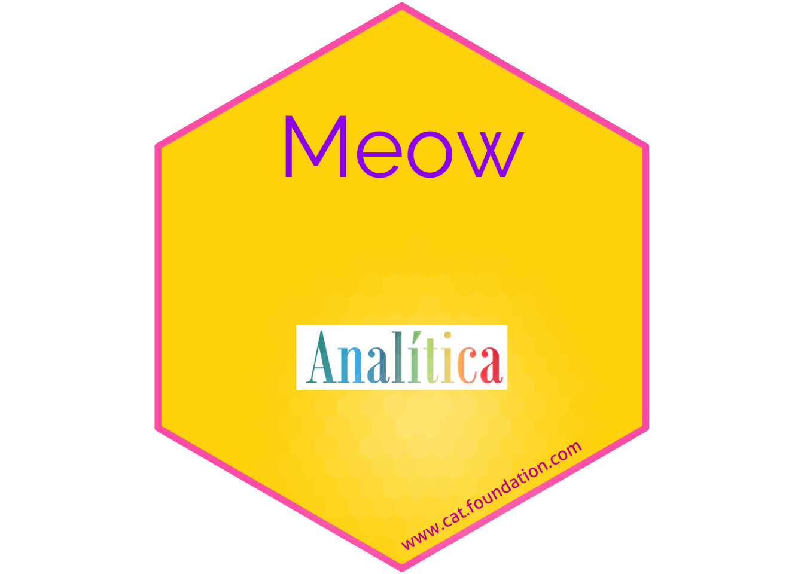

Capítulo22 Hex Stickers
## [1] "2024-11-07"22.1 La función y los valores “default”
sticker(
subplot,
s_x = 0.8,
s_y = 0.75,
s_width = 0.4,
s_height = 0.5,
package,
p_x = 1,
p_y = 1.4,
p_color = "#FFFFFF",
p_family = "Aller_Rg",
p_fontface = "plain",
p_size = 8,
h_size = 1.2,
h_fill = "#1881C2",
h_color = "#87B13F",
spotlight = FALSE,
l_x = 1,
l_y = 0.5,
l_width = 3,
l_height = 3,
l_alpha = 0.4,
url = "",
u_x = 1,
u_y = 0.08,
u_color = "black",
u_family = "Aller_Rg",
u_size = 1.5,
u_angle = 30,
white_around_sticker = FALSE,
...,
filename = paste0(package, ".png"),
asp = 1,
dpi = 300
)Arguments
| Función | Descripción |
|---|---|
| subplot | subplot |
| s_x | x position for subplot |
| s_y | y position for subplot |
| s_width | width for subplot |
| s_height | height for subplot |
| package | package name |
| p_x | x position for package name |
| p_y | y position for package name |
| p_color | color for package name |
| p_family | font family for package name |
| p_fontface | fontface for package name |
| p_size | font size for package name |
| h_size | size for hexagon border |
| h_fill | color to fill hexagon |
| h_color | color for hexagon border |
| spotlight | whether add spotlight |
| l_x | x position for spotlight |
| l_y | y position for spotlight |
| l_width | width for spotlight |
| l_height | height for spotlight |
| l_alpha | maximum alpha for spotlight |
| url | url at lower border |
| u_x | x position for url |
| u_y | y position for url |
| u_color | color for url |
| u_family | font family for url |
| u_size | text size for url |
| u_angle | angle for url |
| white_around_sticker | default to FALSE. If set to TRUE, it puts white triangles in the corners |
| ... | additional parameter to geom_pkgname |
| filename | filename to save sticker |
| asp | aspect ratio, only works if subplot is an image file |
| dpi | plot resolution |
Other Details, - The extension given in filename determines the graphics device that is used to render the sticker, e.g. filename = ‘sticker.png’ creates a png file and filename = ‘sticker.svg’ creates a svg file. For a list of supported graphics devices please see the documentation of ggplot2::ggsave()
sysfonts::font_add_google(“Sixtyfour Convergence”) sysfonts::font_add_google(“Rubik”) sysfonts::font_add_google(“Young Serif”) ## No baja
22.2 Ejemplo de Crear un Hex con un gatito
## path
## 1 /Library/Fonts
## 2 /System/Library/Fonts
## 3 /System/Library/Fonts
## 4 /System/Library/Fonts
## 5 /System/Library/Fonts
## 6 /System/Library/Fonts
## 7 /System/Library/Fonts
## 8 /System/Library/Fonts
## 9 /System/Library/Fonts
## 10 /System/Library/Fonts
## 11 /System/Library/Fonts
## 12 /System/Library/Fonts
## 13 /System/Library/Fonts
## 14 /System/Library/Fonts
## 15 /System/Library/Fonts
## 16 /System/Library/Fonts
## 17 /System/Library/Fonts
## 18 /System/Library/Fonts
## 19 /System/Library/Fonts
## 20 /System/Library/Fonts
## 21 /System/Library/Fonts
## 22 /System/Library/Fonts
## 23 /System/Library/Fonts
## 24 /System/Library/Fonts
## 25 /System/Library/Fonts
## 26 /System/Library/Fonts
## 27 /System/Library/Fonts
## 28 /System/Library/Fonts
## 29 /System/Library/Fonts
## 30 /System/Library/Fonts
## 31 /System/Library/Fonts
## 32 /System/Library/Fonts
## 33 /System/Library/Fonts
## 34 /System/Library/Fonts
## 35 /System/Library/Fonts
## 36 /System/Library/Fonts
## 37 /System/Library/Fonts
## 38 /System/Library/Fonts
## 39 /System/Library/Fonts
## 40 /System/Library/Fonts
## 41 /System/Library/Fonts
## 42 /System/Library/Fonts
## 43 /System/Library/Fonts
## 44 /System/Library/Fonts
## 45 /System/Library/Fonts
## 46 /System/Library/Fonts
## 47 /System/Library/Fonts
## 48 /System/Library/Fonts
## 49 /System/Library/Fonts
## 50 /System/Library/Fonts
## 51 /System/Library/Fonts
## 52 /System/Library/Fonts
## 53 /System/Library/Fonts
## 54 /System/Library/Fonts
## 55 /System/Library/Fonts/Supplemental
## 56 /System/Library/Fonts/Supplemental
## 57 /System/Library/Fonts/Supplemental
## 58 /System/Library/Fonts/Supplemental
## 59 /System/Library/Fonts/Supplemental
## 60 /System/Library/Fonts/Supplemental
## 61 /System/Library/Fonts/Supplemental
## 62 /System/Library/Fonts/Supplemental
## 63 /System/Library/Fonts/Supplemental
## 64 /System/Library/Fonts/Supplemental
## 65 /System/Library/Fonts/Supplemental
## 66 /System/Library/Fonts/Supplemental
## 67 /System/Library/Fonts/Supplemental
## 68 /System/Library/Fonts/Supplemental
## 69 /System/Library/Fonts/Supplemental
## 70 /System/Library/Fonts/Supplemental
## 71 /System/Library/Fonts/Supplemental
## 72 /System/Library/Fonts/Supplemental
## 73 /System/Library/Fonts/Supplemental
## 74 /System/Library/Fonts/Supplemental
## 75 /System/Library/Fonts/Supplemental
## 76 /System/Library/Fonts/Supplemental
## 77 /System/Library/Fonts/Supplemental
## 78 /System/Library/Fonts/Supplemental
## 79 /System/Library/Fonts/Supplemental
## 80 /System/Library/Fonts/Supplemental
## 81 /System/Library/Fonts/Supplemental
## 82 /System/Library/Fonts/Supplemental
## 83 /System/Library/Fonts/Supplemental
## 84 /System/Library/Fonts/Supplemental
## 85 /System/Library/Fonts/Supplemental
## 86 /System/Library/Fonts/Supplemental
## 87 /System/Library/Fonts/Supplemental
## 88 /System/Library/Fonts/Supplemental
## 89 /System/Library/Fonts/Supplemental
## 90 /System/Library/Fonts/Supplemental
## 91 /System/Library/Fonts/Supplemental
## 92 /System/Library/Fonts/Supplemental
## 93 /System/Library/Fonts/Supplemental
## 94 /System/Library/Fonts/Supplemental
## 95 /System/Library/Fonts/Supplemental
## 96 /System/Library/Fonts/Supplemental
## 97 /System/Library/Fonts/Supplemental
## 98 /System/Library/Fonts/Supplemental
## 99 /System/Library/Fonts/Supplemental
## 100 /System/Library/Fonts/Supplemental
## 101 /System/Library/Fonts/Supplemental
## 102 /System/Library/Fonts/Supplemental
## 103 /System/Library/Fonts/Supplemental
## 104 /System/Library/Fonts/Supplemental
## 105 /System/Library/Fonts/Supplemental
## 106 /System/Library/Fonts/Supplemental
## 107 /System/Library/Fonts/Supplemental
## 108 /System/Library/Fonts/Supplemental
## 109 /System/Library/Fonts/Supplemental
## 110 /System/Library/Fonts/Supplemental
## 111 /System/Library/Fonts/Supplemental
## 112 /System/Library/Fonts/Supplemental
## 113 /System/Library/Fonts/Supplemental
## 114 /System/Library/Fonts/Supplemental
## 115 /System/Library/Fonts/Supplemental
## 116 /System/Library/Fonts/Supplemental
## 117 /System/Library/Fonts/Supplemental
## 118 /System/Library/Fonts/Supplemental
## 119 /System/Library/Fonts/Supplemental
## 120 /System/Library/Fonts/Supplemental
## 121 /System/Library/Fonts/Supplemental
## 122 /System/Library/Fonts/Supplemental
## 123 /System/Library/Fonts/Supplemental
## 124 /System/Library/Fonts/Supplemental
## 125 /System/Library/Fonts/Supplemental
## 126 /System/Library/Fonts/Supplemental
## 127 /System/Library/Fonts/Supplemental
## 128 /System/Library/Fonts/Supplemental
## 129 /System/Library/Fonts/Supplemental
## 130 /System/Library/Fonts/Supplemental
## 131 /System/Library/Fonts/Supplemental
## 132 /System/Library/Fonts/Supplemental
## 133 /System/Library/Fonts/Supplemental
## 134 /System/Library/Fonts/Supplemental
## 135 /System/Library/Fonts/Supplemental
## 136 /System/Library/Fonts/Supplemental
## 137 /System/Library/Fonts/Supplemental
## 138 /System/Library/Fonts/Supplemental
## 139 /System/Library/Fonts/Supplemental
## 140 /System/Library/Fonts/Supplemental
## 141 /System/Library/Fonts/Supplemental
## 142 /System/Library/Fonts/Supplemental
## 143 /System/Library/Fonts/Supplemental
## 144 /System/Library/Fonts/Supplemental
## 145 /System/Library/Fonts/Supplemental
## 146 /System/Library/Fonts/Supplemental
## 147 /System/Library/Fonts/Supplemental
## 148 /System/Library/Fonts/Supplemental
## 149 /System/Library/Fonts/Supplemental
## 150 /System/Library/Fonts/Supplemental
## 151 /System/Library/Fonts/Supplemental
## 152 /System/Library/Fonts/Supplemental
## 153 /System/Library/Fonts/Supplemental
## 154 /System/Library/Fonts/Supplemental
## 155 /System/Library/Fonts/Supplemental
## 156 /System/Library/Fonts/Supplemental
## 157 /System/Library/Fonts/Supplemental
## 158 /System/Library/Fonts/Supplemental
## 159 /System/Library/Fonts/Supplemental
## 160 /System/Library/Fonts/Supplemental
## 161 /System/Library/Fonts/Supplemental
## 162 /System/Library/Fonts/Supplemental
## 163 /System/Library/Fonts/Supplemental
## 164 /System/Library/Fonts/Supplemental
## 165 /System/Library/Fonts/Supplemental
## 166 /System/Library/Fonts/Supplemental
## 167 /System/Library/Fonts/Supplemental
## 168 /System/Library/Fonts/Supplemental
## 169 /System/Library/Fonts/Supplemental
## 170 /System/Library/Fonts/Supplemental
## 171 /System/Library/Fonts/Supplemental
## 172 /System/Library/Fonts/Supplemental
## 173 /System/Library/Fonts/Supplemental
## 174 /System/Library/Fonts/Supplemental
## 175 /System/Library/Fonts/Supplemental
## 176 /System/Library/Fonts/Supplemental
## 177 /System/Library/Fonts/Supplemental
## 178 /System/Library/Fonts/Supplemental
## 179 /System/Library/Fonts/Supplemental
## 180 /System/Library/Fonts/Supplemental
## 181 /System/Library/Fonts/Supplemental
## 182 /System/Library/Fonts/Supplemental
## 183 /System/Library/Fonts/Supplemental
## 184 /System/Library/Fonts/Supplemental
## 185 /System/Library/Fonts/Supplemental
## 186 /System/Library/Fonts/Supplemental
## 187 /System/Library/Fonts/Supplemental
## 188 /System/Library/Fonts/Supplemental
## 189 /System/Library/Fonts/Supplemental
## 190 /System/Library/Fonts/Supplemental
## 191 /System/Library/Fonts/Supplemental
## 192 /System/Library/Fonts/Supplemental
## 193 /System/Library/Fonts/Supplemental
## 194 /System/Library/Fonts/Supplemental
## 195 /System/Library/Fonts/Supplemental
## 196 /System/Library/Fonts/Supplemental
## 197 /System/Library/Fonts/Supplemental
## 198 /System/Library/Fonts/Supplemental
## 199 /System/Library/Fonts/Supplemental
## 200 /System/Library/Fonts/Supplemental
## 201 /System/Library/Fonts/Supplemental
## 202 /System/Library/Fonts/Supplemental
## 203 /System/Library/Fonts/Supplemental
## 204 /System/Library/Fonts/Supplemental
## 205 /System/Library/Fonts/Supplemental
## 206 /System/Library/Fonts/Supplemental
## 207 /System/Library/Fonts/Supplemental
## 208 /System/Library/Fonts/Supplemental
## 209 /System/Library/Fonts/Supplemental
## 210 /System/Library/Fonts/Supplemental
## 211 /System/Library/Fonts/Supplemental
## 212 /System/Library/Fonts/Supplemental
## 213 /System/Library/Fonts/Supplemental
## 214 /System/Library/Fonts/Supplemental
## 215 /System/Library/Fonts/Supplemental
## 216 /System/Library/Fonts/Supplemental
## 217 /System/Library/Fonts/Supplemental
## 218 /System/Library/Fonts/Supplemental
## 219 /System/Library/Fonts/Supplemental
## 220 /System/Library/Fonts/Supplemental
## 221 /System/Library/Fonts/Supplemental
## 222 /System/Library/Fonts/Supplemental
## 223 /System/Library/Fonts/Supplemental
## 224 /System/Library/Fonts/Supplemental
## 225 /System/Library/Fonts/Supplemental
## 226 /System/Library/Fonts/Supplemental
## 227 /System/Library/Fonts/Supplemental
## 228 /System/Library/Fonts/Supplemental
## 229 /System/Library/Fonts/Supplemental
## 230 /System/Library/Fonts/Supplemental
## 231 /System/Library/Fonts/Supplemental
## 232 /System/Library/Fonts/Supplemental
## 233 /System/Library/Fonts/Supplemental
## 234 /System/Library/Fonts/Supplemental
## 235 /System/Library/Fonts/Supplemental
## 236 /System/Library/Fonts/Supplemental
## 237 /System/Library/Fonts/Supplemental
## 238 /System/Library/Fonts/Supplemental
## 239 /System/Library/Fonts/Supplemental
## 240 /System/Library/Fonts/Supplemental
## 241 /System/Library/Fonts/Supplemental
## 242 /System/Library/Fonts/Supplemental
## 243 /System/Library/Fonts/Supplemental
## 244 /System/Library/Fonts/Supplemental
## 245 /System/Library/Fonts/Supplemental
## 246 /System/Library/Fonts/Supplemental
## 247 /System/Library/Fonts/Supplemental
## 248 /System/Library/Fonts/Supplemental
## 249 /System/Library/Fonts/Supplemental
## 250 /System/Library/Fonts/Supplemental
## 251 /System/Library/Fonts/Supplemental
## 252 /System/Library/Fonts/Supplemental
## 253 /System/Library/Fonts/Supplemental
## 254 /System/Library/Fonts/Supplemental
## 255 /System/Library/Fonts/Supplemental
## 256 /System/Library/Fonts/Supplemental
## 257 /System/Library/Fonts/Supplemental
## 258 /System/Library/Fonts/Supplemental
## 259 /System/Library/Fonts/Supplemental
## 260 /System/Library/Fonts/Supplemental
## 261 /System/Library/Fonts/Supplemental
## 262 /System/Library/Fonts/Supplemental
## 263 /System/Library/Fonts/Supplemental
## 264 /System/Library/Fonts/Supplemental
## 265 /System/Library/Fonts/Supplemental
## 266 /System/Library/Fonts/Supplemental
## 267 /System/Library/Fonts/Supplemental
## 268 /System/Library/Fonts/Supplemental
## 269 /System/Library/Fonts/Supplemental
## 270 /System/Library/Fonts/Supplemental
## 271 /System/Library/Fonts/Supplemental
## 272 /System/Library/Fonts/Supplemental
## 273 /System/Library/Fonts/Supplemental
## 274 /System/Library/Fonts/Supplemental
## 275 /System/Library/Fonts/Supplemental
## 276 /System/Library/Fonts/Supplemental
## 277 /System/Library/Fonts/Supplemental
## 278 /System/Library/Fonts/Supplemental
## 279 /System/Library/Fonts/Supplemental
## 280 /System/Library/Fonts/Supplemental
## 281 /System/Library/Fonts/Supplemental
## 282 /System/Library/Fonts/Supplemental
## 283 /System/Library/Fonts/Supplemental
## 284 /System/Library/Fonts/Supplemental
## 285 /System/Library/Fonts/Supplemental
## 286 /System/Library/Fonts/Supplemental
## 287 /System/Library/Fonts/Supplemental
## 288 /System/Library/Fonts/Supplemental
## 289 /System/Library/Fonts/Supplemental
## 290 /System/Library/Fonts/Supplemental
## 291 /System/Library/Fonts/Supplemental
## 292 /System/Library/Fonts/Supplemental
## 293 /System/Library/Fonts/Supplemental
## 294 /System/Library/Fonts/Supplemental
## 295 /System/Library/Fonts/Supplemental
## 296 /System/Library/Fonts/Supplemental
## 297 /System/Library/Fonts/Supplemental
## 298 /System/Library/Fonts/Supplemental
## 299 /System/Library/Fonts/Supplemental
## 300 /System/Library/Fonts/Supplemental
## 301 /System/Library/Fonts/Supplemental
## 302 /System/Library/Fonts/Supplemental
## 303 /System/Library/Fonts/Supplemental
## 304 /System/Library/Fonts/Supplemental
## 305 /System/Library/Fonts/Supplemental
## 306 /System/Library/Fonts/Supplemental
## 307 /System/Library/Fonts/Supplemental
## 308 /System/Library/Fonts/Supplemental
## 309 /System/Library/Fonts/Supplemental
## 310 /System/Library/Fonts/Supplemental
## 311 /System/Library/Fonts/Supplemental
## 312 /System/Library/Fonts/Supplemental
## 313 /System/Library/Fonts/Supplemental
## 314 /System/Library/Fonts/Supplemental
## 315 /System/Library/Fonts/Supplemental
## 316 /System/Library/Fonts/Supplemental
## 317 /System/Library/Fonts/Supplemental
## 318 /System/Library/Fonts/Supplemental
## 319 /System/Library/Fonts/Supplemental
## 320 /System/Library/Fonts/Supplemental
## 321 /System/Library/Fonts/Supplemental
## 322 /System/Library/Fonts/Supplemental
## 323 /System/Library/Fonts/Supplemental
## 324 /System/Library/Fonts/Supplemental
## 325 /System/Library/Fonts/Supplemental
## 326 /System/Library/Fonts/Supplemental
## 327 /System/Library/Fonts/Supplemental
## 328 /System/Library/Fonts/Supplemental
## 329 /System/Library/Fonts/Supplemental
## 330 /System/Library/Fonts/Supplemental
## 331 /System/Library/Fonts/Supplemental
## 332 /System/Library/Fonts/Supplemental
## 333 /System/Library/Fonts/Supplemental
## 334 /System/Library/Fonts/Supplemental
## 335 /System/Library/Fonts/Supplemental
## 336 /System/Library/Fonts/Supplemental
## 337 /System/Library/Fonts/Supplemental
## 338 /System/Library/Fonts
## 339 /System/Library/Fonts
## 340 /System/Library/Fonts
## 341 /System/Library/Fonts
## 342 /System/Library/Fonts
## 343 /System/Library/Fonts
## 344 /System/Library/Fonts
## 345 /System/Library/Fonts
## 346 /System/Library/Fonts
## 347 /System/Library/Fonts
## 348 /System/Library/Fonts
## 349 /System/Library/Fonts
## 350 /System/Library/Fonts
## 351 /System/Library/Fonts
## 352 /System/Library/Fonts
## 353 /System/Library/Fonts
## file family
## 1 Arial Unicode.ttf Arial Unicode MS
## 2 Apple Braille Outline 6 Dot.ttf Apple Braille
## 3 Apple Braille Outline 8 Dot.ttf Apple Braille
## 4 Apple Braille Pinpoint 6 Dot.ttf Apple Braille
## 5 Apple Braille Pinpoint 8 Dot.ttf Apple Braille
## 6 Apple Braille.ttf Apple Braille
## 7 Apple Color Emoji.ttc Apple Color Emoji
## 8 Apple Symbols.ttf Apple Symbols
## 9 AppleSDGothicNeo.ttc Apple SD Gothic Neo
## 10 AquaKana.ttc .Aqua Kana
## 11 ArialHB.ttc Arial Hebrew
## 12 Avenir Next Condensed.ttc Avenir Next Condensed
## 13 Avenir Next.ttc Avenir Next
## 14 Avenir.ttc Avenir Book
## 15 Courier.ttc Courier
## 16 GeezaPro.ttc Geeza Pro
## 17 Geneva.ttf Geneva
## 18 Helvetica.ttc Helvetica
## 19 HelveticaNeue.ttc Helvetica Neue
## 20 Hiragino Sans GB.ttc Hiragino Sans GB W3
## 21 Keyboard.ttf .Keyboard
## 22 Kohinoor.ttc Kohinoor Devanagari
## 23 KohinoorBangla.ttc Kohinoor Bangla
## 24 KohinoorGujarati.ttc Kohinoor Gujarati
## 25 KohinoorTelugu.ttc Kohinoor Telugu
## 26 LastResort.otf .LastResort
## 27 LucidaGrande.ttc Lucida Grande
## 28 MarkerFelt.ttc Marker Felt
## 29 Menlo.ttc Menlo
## 30 Monaco.ttf Monaco
## 31 MuktaMahee.ttc MuktaMahee Regular
## 32 NewYork.ttf .New York
## 33 NewYorkItalic.ttf .New York
## 34 Noteworthy.ttc Noteworthy
## 35 NotoNastaliq.ttc Noto Nastaliq Urdu
## 36 NotoSansArmenian.ttc Noto Sans Armenian Blk
## 37 NotoSansKannada.ttc Noto Sans Kannada Black
## 38 NotoSansMyanmar.ttc Noto Sans Myanmar Blk
## 39 NotoSansOriya.ttc Noto Sans Oriya
## 40 NotoSerifMyanmar.ttc Noto Serif Myanmar Blk
## 41 Optima.ttc Optima
## 42 Palatino.ttc Palatino
## 43 PingFang.ttc PingFang HK
## 44 SFArabic.ttf .SF Arabic
## 45 SFCompact.ttf .SF Compact
## 46 SFCompactItalic.ttf .SF Compact
## 47 SFCompactRounded.ttf .SF Compact Rounded
## 48 SFNS.ttf System Font
## 49 SFNSItalic.ttf System Font
## 50 SFNSMono.ttf .SF NS Mono
## 51 SFNSMonoItalic.ttf .SF NS Mono
## 52 SFNSRounded.ttf .SF NS Rounded
## 53 STHeiti Light.ttc Heiti TC
## 54 STHeiti Medium.ttc Heiti TC
## 55 Academy Engraved LET Fonts.ttf Academy Engraved LET
## 56 Al Nile.ttc Al Nile
## 57 Al Tarikh.ttc Al Tarikh
## 58 AlBayan.ttc Al Bayan
## 59 AmericanTypewriter.ttc American Typewriter
## 60 Andale Mono.ttf Andale Mono
## 61 Apple Chancery.ttf Apple Chancery
## 62 AppleGothic.ttf AppleGothic
## 63 AppleMyungjo.ttf AppleMyungjo
## 64 Arial Black.ttf Arial Black
## 65 Arial Bold Italic.ttf Arial
## 66 Arial Bold.ttf Arial
## 67 Arial Italic.ttf Arial
## 68 Arial Narrow Bold Italic.ttf Arial Narrow
## 69 Arial Narrow Bold.ttf Arial Narrow
## 70 Arial Narrow Italic.ttf Arial Narrow
## 71 Arial Narrow.ttf Arial Narrow
## 72 Arial Rounded Bold.ttf Arial Rounded MT Bold
## 73 Arial Unicode.ttf Arial Unicode MS
## 74 Arial.ttf Arial
## 75 Athelas.ttc Athelas
## 76 Ayuthaya.ttf Ayuthaya
## 77 Baghdad.ttc Baghdad
## 78 Bangla MN.ttc Bangla MN
## 79 Bangla Sangam MN.ttc Bangla Sangam MN
## 80 Baskerville.ttc Baskerville
## 81 Beirut.ttc Beirut
## 82 BigCaslon.ttf Big Caslon
## 83 Bodoni 72 OS.ttc Bodoni 72 Oldstyle
## 84 Bodoni 72 Smallcaps Book.ttf Bodoni 72 Smallcaps
## 85 Bodoni 72.ttc Bodoni 72
## 86 Bodoni Ornaments.ttf Bodoni Ornaments
## 87 Bradley Hand Bold.ttf Bradley Hand
## 88 Brush Script.ttf Brush Script MT
## 89 Chalkboard.ttc Chalkboard
## 90 ChalkboardSE.ttc Chalkboard SE
## 91 Chalkduster.ttf Chalkduster
## 92 Charter.ttc Charter
## 93 Cochin.ttc Cochin
## 94 Comic Sans MS Bold.ttf Comic Sans MS
## 95 Comic Sans MS.ttf Comic Sans MS
## 96 Copperplate.ttc Copperplate
## 97 Corsiva.ttc Corsiva Hebrew
## 98 Courier New Bold Italic.ttf Courier New
## 99 Courier New Bold.ttf Courier New
## 100 Courier New Italic.ttf Courier New
## 101 Courier New.ttf Courier New
## 102 Damascus.ttc Damascus
## 103 DecoTypeNaskh.ttc DecoType Naskh
## 104 Devanagari Sangam MN.ttc Devanagari Sangam MN
## 105 DevanagariMT.ttc Devanagari MT
## 106 Didot.ttc Didot
## 107 DIN Alternate Bold.ttf DIN Alternate
## 108 DIN Condensed Bold.ttf DIN Condensed
## 109 Diwan Kufi.ttc Diwan Kufi
## 110 Diwan Thuluth.ttf Diwan Thuluth
## 111 EuphemiaCAS.ttc Euphemia UCAS
## 112 Farah.ttc Farah
## 113 Farisi.ttf Farisi
## 114 Futura.ttc Futura
## 115 Galvji.ttc Galvji
## 116 Georgia Bold Italic.ttf Georgia
## 117 Georgia Bold.ttf Georgia
## 118 Georgia Italic.ttf Georgia
## 119 Georgia.ttf Georgia
## 120 GillSans.ttc Gill Sans
## 121 Gujarati Sangam MN.ttc Gujarati Sangam MN
## 122 GujaratiMT.ttc Gujarati MT
## 123 Gurmukhi MN.ttc Gurmukhi MN
## 124 Gurmukhi Sangam MN.ttc Gurmukhi Sangam MN
## 125 Gurmukhi.ttf Gurmukhi MT
## 126 Herculanum.ttf Herculanum
## 127 Hoefler Text Ornaments.ttf Hoefler Text Ornaments
## 128 Hoefler Text.ttc Hoefler Text
## 129 Impact.ttf Impact
## 130 InaiMathi-MN.ttc InaiMathi
## 131 Iowan Old Style.ttc Iowan Old Style
## 132 ITFDevanagari.ttc ITF Devanagari
## 133 Kailasa.ttc Kailasa
## 134 Kannada MN.ttc Kannada MN
## 135 Kannada Sangam MN.ttc Kannada Sangam MN
## 136 Kefa.ttc Kefa
## 137 Khmer MN.ttc Khmer MN
## 138 Khmer Sangam MN.ttf Khmer Sangam MN
## 139 Kokonor.ttf Kokonor
## 140 Krungthep.ttf Krungthep
## 141 KufiStandardGK.ttc KufiStandardGK
## 142 Lao MN.ttc Lao MN
## 143 Lao Sangam MN.ttf Lao Sangam MN
## 144 Luminari.ttf Luminari
## 145 Malayalam MN.ttc Malayalam MN
## 146 Malayalam Sangam MN.ttc Malayalam Sangam MN
## 147 Marion.ttc Marion
## 148 Microsoft Sans Serif.ttf Microsoft Sans Serif
## 149 Mishafi Gold.ttf Mishafi Gold
## 150 Mishafi.ttf Mishafi
## 151 Mshtakan.ttc Mshtakan
## 152 Muna.ttc Muna
## 153 Myanmar MN.ttc Myanmar MN
## 154 Myanmar Sangam MN.ttc Myanmar Sangam MN
## 155 Nadeem.ttc Nadeem
## 156 NewPeninimMT.ttc New Peninim MT
## 157 NISC18030.ttf GB18030 Bitmap
## 158 NotoSansAdlam-Regular.ttf Noto Sans Adlam
## 159 NotoSansAvestan-Regular.ttf Noto Sans Avestan
## 160 NotoSansBamum-Regular.ttf Noto Sans Bamum
## 161 NotoSansBassaVah-Regular.ttf Noto Sans Bassa Vah
## 162 NotoSansBatak-Regular.ttf Noto Sans Batak
## 163 NotoSansBhaiksuki-Regular.ttf Noto Sans Bhaiksuki
## 164 NotoSansBrahmi-Regular.ttf Noto Sans Brahmi
## 165 NotoSansBuginese-Regular.ttf Noto Sans Buginese
## 166 NotoSansBuhid-Regular.ttf Noto Sans Buhid
## 167 NotoSansCarian-Regular.ttf Noto Sans Carian
## 168 NotoSansCaucasianAlbanian-Regular.ttf Noto Sans CaucAlban
## 169 NotoSansChakma-Regular.ttf Noto Sans Chakma
## 170 NotoSansCham-Regular.ttf Noto Sans Cham
## 171 NotoSansCoptic-Regular.ttf Noto Sans Coptic
## 172 NotoSansCuneiform-Regular.ttf Noto Sans Cuneiform
## 173 NotoSansCypriot-Regular.ttf Noto Sans Cypriot
## 174 NotoSansDuployan-Regular.ttf Noto Sans Duployan
## 175 NotoSansEgyptianHieroglyphs-Regular.ttf Noto Sans EgyptHiero
## 176 NotoSansElbasan-Regular.ttf Noto Sans Elbasan
## 177 NotoSansGlagolitic-Regular.ttf Noto Sans Glagolitic
## 178 NotoSansGothic-Regular.ttf Noto Sans Gothic
## 179 NotoSansGunjalaGondi-Regular.otf Noto Sans Gunjala Gondi
## 180 NotoSansHanifiRohingya-Regular.ttf Noto Sans HanifiRohg
## 181 NotoSansHanunoo-Regular.ttf Noto Sans Hanunoo
## 182 NotoSansHatran-Regular.ttf Noto Sans Hatran
## 183 NotoSansImperialAramaic-Regular.ttf Noto Sans ImpAramaic
## 184 NotoSansInscriptionalPahlavi-Regular.ttf Noto Sans InsPahlavi
## 185 NotoSansInscriptionalParthian-Regular.ttf Noto Sans InsParthi
## 186 NotoSansJavanese-Regular.otf Noto Sans Javanese
## 187 NotoSansKaithi-Regular.ttf Noto Sans Kaithi
## 188 NotoSansKayahLi-Regular.ttf Noto Sans Kayah Li
## 189 NotoSansKharoshthi-Regular.ttf Noto Sans Kharoshthi
## 190 NotoSansKhojki-Regular.ttf Noto Sans Khojki
## 191 NotoSansKhudawadi-Regular.ttf Noto Sans Khudawadi
## 192 NotoSansLepcha-Regular.ttf Noto Sans Lepcha
## 193 NotoSansLimbu-Regular.ttf Noto Sans Limbu
## 194 NotoSansLinearA-Regular.ttf Noto Sans Linear A
## 195 NotoSansLinearB-Regular.ttf Noto Sans Linear B
## 196 NotoSansLisu-Regular.ttf Noto Sans Lisu
## 197 NotoSansLycian-Regular.ttf Noto Sans Lycian
## 198 NotoSansLydian-Regular.ttf Noto Sans Lydian
## 199 NotoSansMahajani-Regular.ttf Noto Sans Mahajani
## 200 NotoSansMandaic-Regular.ttf Noto Sans Mandaic
## 201 NotoSansManichaean-Regular.ttf Noto Sans Manichaean
## 202 NotoSansMarchen-Regular.ttf Noto Sans Marchen
## 203 NotoSansMasaramGondi-Regular.otf Noto Sans Masaram Gondi
## 204 NotoSansMeeteiMayek-Regular.ttf Noto Sans MeeteiMayek
## 205 NotoSansMendeKikakui-Regular.ttf Noto Sans Mende Kikakui
## 206 NotoSansMeroitic-Regular.ttf Noto Sans Meroitic
## 207 NotoSansMiao-Regular.ttf Noto Sans Miao
## 208 NotoSansModi-Regular.ttf Noto Sans Modi
## 209 NotoSansMongolian-Regular.ttf Noto Sans Mongolian
## 210 NotoSansMro-Regular.ttf Noto Sans Mro
## 211 NotoSansMultani-Regular.ttf Noto Sans Multani
## 212 NotoSansNabataean-Regular.ttf Noto Sans Nabataean
## 213 NotoSansNewa-Regular.ttf Noto Sans Newa
## 214 NotoSansNewTaiLue-Regular.ttf Noto Sans NewTaiLue
## 215 NotoSansNKo-Regular.ttf Noto Sans NKo
## 216 NotoSansOlChiki-Regular.ttf Noto Sans Ol Chiki
## 217 NotoSansOldHungarian-Regular.ttf Noto Sans OldHung
## 218 NotoSansOldItalic-Regular.ttf Noto Sans Old Italic
## 219 NotoSansOldNorthArabian-Regular.ttf Noto Sans OldNorArab
## 220 NotoSansOldPermic-Regular.ttf Noto Sans Old Permic
## 221 NotoSansOldPersian-Regular.ttf Noto Sans OldPersian
## 222 NotoSansOldSouthArabian-Regular.ttf Noto Sans OldSouArab
## 223 NotoSansOldTurkic-Regular.ttf Noto Sans Old Turkic
## 224 NotoSansOsage-Regular.ttf Noto Sans Osage
## 225 NotoSansOsmanya-Regular.ttf Noto Sans Osmanya
## 226 NotoSansPahawhHmong-Regular.ttf Noto Sans Pahawh Hmong
## 227 NotoSansPalmyrene-Regular.ttf Noto Sans Palmyrene
## 228 NotoSansPauCinHau-Regular.ttf Noto Sans PauCinHau
## 229 NotoSansPhagsPa-Regular.ttf Noto Sans PhagsPa
## 230 NotoSansPhoenician-Regular.ttf Noto Sans Phoenician
## 231 NotoSansPsalterPahlavi-Regular.ttf Noto Sans PsaPahlavi
## 232 NotoSansRejang-Regular.ttf Noto Sans Rejang
## 233 NotoSansSamaritan-Regular.ttf Noto Sans Samaritan
## 234 NotoSansSaurashtra-Regular.ttf Noto Sans Saurashtra
## 235 NotoSansSharada-Regular.ttf Noto Sans Sharada
## 236 NotoSansSiddham-Regular.ttf Noto Sans Siddham
## 237 NotoSansSoraSompeng-Regular.ttf Noto Sans SoraSomp
## 238 NotoSansSundanese-Regular.ttf Noto Sans Sundanese
## 239 NotoSansSylotiNagri-Regular.ttf Noto Sans Syloti Nagri
## 240 NotoSansSyriac-Regular.ttf Noto Sans Syriac
## 241 NotoSansTagalog-Regular.ttf Noto Sans Tagalog
## 242 NotoSansTagbanwa-Regular.ttf Noto Sans Tagbanwa
## 243 NotoSansTaiLe-Regular.ttf Noto Sans Tai Le
## 244 NotoSansTaiTham-Regular.ttf Noto Sans Tai Tham
## 245 NotoSansTaiViet-Regular.ttf Noto Sans Tai Viet
## 246 NotoSansTakri-Regular.ttf Noto Sans Takri
## 247 NotoSansThaana-Regular.ttf Noto Sans Thaana
## 248 NotoSansTifinagh-Regular.ttf Noto Sans Tifinagh
## 249 NotoSansTirhuta-Regular.ttf Noto Sans Tirhuta
## 250 NotoSansUgaritic-Regular.ttf Noto Sans Ugaritic
## 251 NotoSansVai-Regular.ttf Noto Sans Vai
## 252 NotoSansWancho-Regular.ttf Noto Sans Wancho
## 253 NotoSansWarangCiti-Regular.ttf Noto Sans WarangCiti
## 254 NotoSansYi-Regular.ttf Noto Sans Yi
## 255 NotoSerifAhom-Regular.ttf Noto Serif Ahom
## 256 NotoSerifBalinese-Regular.ttf Noto Serif Balinese
## 257 NotoSerifYezidi-Regular.otf Noto Serif Yezidi
## 258 Oriya MN.ttc Oriya MN
## 259 Oriya Sangam MN.ttc Oriya Sangam MN
## 260 Papyrus.ttc Papyrus
## 261 PartyLET-plain.ttf Party LET
## 262 Phosphate.ttc Phosphate
## 263 PlantagenetCherokee.ttf Plantagenet Cherokee
## 264 PTMono.ttc PT Mono
## 265 PTSans.ttc PT Sans
## 266 PTSerif.ttc PT Serif
## 267 PTSerifCaption.ttc PT Serif Caption
## 268 Raanana.ttc Raanana
## 269 Rockwell.ttc Rockwell
## 270 Sana.ttc Sana
## 271 Sathu.ttf Sathu
## 272 Savoye LET.ttc Savoye LET
## 273 Seravek.ttc Seravek
## 274 Shree714.ttc Shree Devanagari 714
## 275 SignPainter.ttc SignPainter-HouseScript
## 276 Silom.ttf Silom
## 277 Sinhala MN.ttc Sinhala MN
## 278 Sinhala Sangam MN.ttc Sinhala Sangam MN
## 279 Skia.ttf Skia
## 280 SnellRoundhand.ttc Snell Roundhand
## 281 Songti.ttc Songti SC
## 282 STIXGeneral.otf STIXGeneral
## 283 STIXGeneralBol.otf STIXGeneral
## 284 STIXGeneralBolIta.otf STIXGeneral
## 285 STIXGeneralItalic.otf STIXGeneral
## 286 STIXIntDBol.otf STIXIntegralsD
## 287 STIXIntDReg.otf STIXIntegralsD
## 288 STIXIntSmBol.otf STIXIntegralsSm
## 289 STIXIntSmReg.otf STIXIntegralsSm
## 290 STIXIntUpBol.otf STIXIntegralsUp
## 291 STIXIntUpDBol.otf STIXIntegralsUpD
## 292 STIXIntUpDReg.otf STIXIntegralsUpD
## 293 STIXIntUpReg.otf STIXIntegralsUp
## 294 STIXIntUpSmBol.otf STIXIntegralsUpSm
## 295 STIXIntUpSmReg.otf STIXIntegralsUpSm
## 296 STIXNonUni.otf STIXNonUnicode
## 297 STIXNonUniBol.otf STIXNonUnicode
## 298 STIXNonUniBolIta.otf STIXNonUnicode
## 299 STIXNonUniIta.otf STIXNonUnicode
## 300 STIXSizFiveSymReg.otf STIXSizeFiveSym
## 301 STIXSizFourSymBol.otf STIXSizeFourSym
## 302 STIXSizFourSymReg.otf STIXSizeFourSym
## 303 STIXSizOneSymBol.otf STIXSizeOneSym
## 304 STIXSizOneSymReg.otf STIXSizeOneSym
## 305 STIXSizThreeSymBol.otf STIXSizeThreeSym
## 306 STIXSizThreeSymReg.otf STIXSizeThreeSym
## 307 STIXSizTwoSymBol.otf STIXSizeTwoSym
## 308 STIXSizTwoSymReg.otf STIXSizeTwoSym
## 309 STIXVar.otf STIXVariants
## 310 STIXVarBol.otf STIXVariants
## 311 SukhumvitSet.ttc Sukhumvit Set
## 312 SuperClarendon.ttc Superclarendon
## 313 Tahoma Bold.ttf Tahoma
## 314 Tahoma.ttf Tahoma
## 315 Tamil MN.ttc Tamil MN
## 316 Tamil Sangam MN.ttc Tamil Sangam MN
## 317 Telugu MN.ttc Telugu MN
## 318 Telugu Sangam MN.ttc Telugu Sangam MN
## 319 Times New Roman Bold Italic.ttf Times New Roman
## 320 Times New Roman Bold.ttf Times New Roman
## 321 Times New Roman Italic.ttf Times New Roman
## 322 Times New Roman.ttf Times New Roman
## 323 Trattatello.ttf Trattatello
## 324 Trebuchet MS Bold Italic.ttf Trebuchet MS
## 325 Trebuchet MS Bold.ttf Trebuchet MS
## 326 Trebuchet MS Italic.ttf Trebuchet MS
## 327 Trebuchet MS.ttf Trebuchet MS
## 328 Verdana Bold Italic.ttf Verdana
## 329 Verdana Bold.ttf Verdana
## 330 Verdana Italic.ttf Verdana
## 331 Verdana.ttf Verdana
## 332 Waseem.ttc Waseem
## 333 Webdings.ttf Webdings
## 334 Wingdings 2.ttf Wingdings 2
## 335 Wingdings 3.ttf Wingdings 3
## 336 Wingdings.ttf Wingdings
## 337 Zapfino.ttf Zapfino
## 338 Symbol.ttf Symbol
## 339 Thonburi.ttc Thonburi
## 340 Times.ttc Times
## 341 ZapfDingbats.ttf Zapf Dingbats
## 342 ヒラギノ丸ゴ ProN W4.ttc Hiragino Maru Gothic Pro W4
## 343 ヒラギノ明朝 ProN.ttc Hiragino Mincho ProN W3
## 344 ヒラギノ角ゴシック W0.ttc Hiragino Sans W0
## 345 ヒラギノ角ゴシック W1.ttc Hiragino Sans W1
## 346 ヒラギノ角ゴシック W2.ttc Hiragino Sans W2
## 347 ヒラギノ角ゴシック W3.ttc Hiragino Sans W3
## 348 ヒラギノ角ゴシック W4.ttc Hiragino Sans W4
## 349 ヒラギノ角ゴシック W5.ttc Hiragino Sans W5
## 350 ヒラギノ角ゴシック W6.ttc Hiragino Sans W6
## 351 ヒラギノ角ゴシック W7.ttc Hiragino Sans W7
## 352 ヒラギノ角ゴシック W8.ttc Hiragino Sans W8
## 353 ヒラギノ角ゴシック W9.ttc Hiragino Sans W9
## face version
## 1 Regular Version 1.01x
## 2 Outline 6 Dot 13.0d2e27
## 3 Outline 8 Dot 13.0d2e27
## 4 Pinpoint 6 Dot 13.0d2e27
## 5 Pinpoint 8 Dot 13.0d2e27
## 6 Regular 13.0d2e27
## 7 Regular 17.4d12e1
## 8 Regular 17.0d1e2
## 9 Regular 13.0d1e9
## 10 Regular 13.0d1e4
## 11 Regular 13.0d1e1
## 12 Bold 13.0d1e10
## 13 Bold 13.0d1e10
## 14 Regular 13.0d3e1
## 15 Regular 17.0d2e1
## 16 Regular 14.0d1e4
## 17 Regular 17.0d2e1
## 18 Regular 17.0d1e1
## 19 Regular 17.0d2e1
## 20 Regular 17.0d0e2
## 21 Regular 13.0d2e4
## 22 Regular 14.0d5e3
## 23 Regular 14.0d2e3
## 24 Bold 14.0d2e16
## 25 Regular 14.0d1e3
## 26 Regular 17.0d3e1
## 27 Regular 15.0d1e1
## 28 Thin 13.0d1e11
## 29 Regular 17.0d1e1
## 30 Regular 17.0d1e5
## 31 Regular 14.0d1e18
## 32 Regular 17.0d5e1
## 33 Regular Italic 17.0d5e1
## 34 Light 17.0d1e1
## 35 Regular 14.0d2e19
## 36 Regular 15.0d1e2
## 37 Regular 14.0d1e7
## 38 Regular 17.0d1e2
## 39 Regular 14.0d1e2
## 40 Regular 14.0d1e5
## 41 Regular 13.0d1e2
## 42 Regular 15.0d2e2
## 43 Regular 17.d1e2
## 44 Regular 17.0d16e1
## 45 Black 17.0d11e1
## 46 Black Italic 17.0d11e1
## 47 Regular 17.0d11e1
## 48 Regular 17.0d11e1
## 49 Regular Italic 17.0d11e1
## 50 Light 16.0d2e1
## 51 Light Italic 16.0d2e1
## 52 Regular 17.0d11e1
## 53 Light 17.0d1e2
## 54 Medium 17.0d1e2
## 55 Plain 16.0d1e1
## 56 Regular 13.0d2e2
## 57 Regular 13.0d2e1
## 58 Plain 13.0d1e6
## 59 Regular 16.0d2e4
## 60 Regular Version 2.00x
## 61 Chancery 13.0d1e4
## 62 Regular 13.0d1e3
## 63 Regular 13.0d1e6
## 64 Regular Version 5.00.1x
## 65 Bold Italic Version 5.00.2x
## 66 Bold Version 5.01.2x
## 67 Italic Version 5.00.2x
## 68 Bold Italic Version 2.38.1x
## 69 Bold Version 2.38.1x
## 70 Italic Version 2.38.1x
## 71 Regular Version 2.38.1x
## 72 Regular Version 1.51x
## 73 Regular Version 1.01x
## 74 Regular Version 5.01.2x
## 75 Regular 13.0d1e3
## 76 Regular 13.0d1e7
## 77 Regular 13.0d1e5
## 78 Regular 14.0d1e2
## 79 Regular 14.0d1e1
## 80 Regular 13.0d1e10
## 81 Regular 13.0d1e6
## 82 Medium 13.0d1e11
## 83 Book 13.0d2e1
## 84 Book 13.0d2e1
## 85 Book 13.0d2e1
## 86 Regular 13.0d2e1
## 87 Bold 14.0d0e1
## 88 Italic Version 1.52x-1
## 89 Regular 13.0d1e2
## 90 Light 13.0d1e2
## 91 Regular 13.0d2e1
## 92 Roman 14.0d2e1
## 93 Regular 13.0d2e1
## 94 Bold Version 5.00x
## 95 Regular Version 5.00x
## 96 Regular 13.0d1e2
## 97 Regular 13.0d1e4
## 98 Bold Italic Version 5.00x
## 99 Bold Version 5.00.2x
## 100 Italic Version 5.00.1x
## 101 Regular Version 5.00.2x
## 102 Regular 13.0d3e9
## 103 Regular 14.0d0e1
## 104 Regular 14.0d1e12
## 105 Regular 13.0d1e3
## 106 Regular 13.0d1e3
## 107 Bold 13.0d3e2
## 108 Bold 14.0d1e1
## 109 Regular 13.0d2e1
## 110 Regular 13.0d1e5
## 111 Regular 15.0d1e3
## 112 Regular 13.0d2e3
## 113 Regular 13.0d1e3
## 114 Medium 16.0d2e1
## 115 Regular 14.0d1e3
## 116 Bold Italic Version 5.00x-4
## 117 Bold Version 5.00x-4
## 118 Italic Version 5.00x-4
## 119 Regular Version 5.00x-4
## 120 Regular 16.0d1e1
## 121 Regular 17.0d1e3
## 122 Regular 13.0d1e2
## 123 Regular 14.0d4e2
## 124 Regular 14.0d3e1
## 125 Regular 13.0d1e4
## 126 Regular 13.0d1e2
## 127 Ornaments 14.0d1e2
## 128 Regular 14.0d1e2
## 129 Regular Version 5.00x
## 130 Regular 13.0d1e5
## 131 Roman 14.0d1e1
## 132 Book 14.0d3e6
## 133 Regular 16.0d1e1
## 134 Regular 14.0d1e6
## 135 Regular 14.0d2e4
## 136 Regular 17.0d1e2
## 137 Regular 14.0d1e1
## 138 Regular 14.0d1e9
## 139 Regular 13.0d1e3
## 140 Regular 14.0d1e1
## 141 Regular 13.0d1e11
## 142 Regular 14.0d1e9
## 143 Regular 14.0d1e6
## 144 Regular 13.0d1e2
## 145 Regular 14.0d1e6
## 146 Regular 14.0d4e6
## 147 Regular 13.0d1e2
## 148 Regular Version 5.00.1x
## 149 Regular 13.0d2e1
## 150 Regular 13.0d2e1
## 151 Regular 14.0d1e1
## 152 Regular 13.0d1e4
## 153 Regular 14.0d1e2
## 154 Regular 14.0d1e8
## 155 Regular 13.0d1e3
## 156 Regular 13.0d1e4
## 157 Regular 13.0d1e1
## 158 Regular Version 3.000
## 159 Regular Version 2.000;GOOG;noto-source:20181019:f8f3770
## 160 Regular Version 2.000;GOOG;noto-source:20181019:f8f3770
## 161 Regular Version 2.000
## 162 Regular Version 2.000;GOOG;noto-source:20181019:f8f3770
## 163 Regular Version 2.000
## 164 Regular Version 2.000;GOOG;noto-source:20181019:f8f3770
## 165 Regular Version 2.000;GOOG;noto-source:20181019:f8f3770
## 166 Regular Version 2.000;GOOG;noto-source:20181019:f8f3770
## 167 Regular Version 2.000;GOOG;noto-source:20181019:f8f3770
## 168 Regular Version 2.001
## 169 Regular Version 2.001;GOOG;noto-source:20181019:f8f3770
## 170 Regular Version 2.000;GOOG;noto-source:20181019:f8f3770
## 171 Regular Version 2.000;GOOG;noto-source:20181019:f8f3770
## 172 Regular Version 2.000;GOOG;noto-source:20181019:f8f3770
## 173 Regular Version 2.000;GOOG;noto-source:20181019:f8f3770
## 174 Regular Version 2.000
## 175 Regular Version 2.000;GOOG;noto-source:20181019:f8f3770
## 176 Regular Version 2.000
## 177 Regular Version 2.000;GOOG;noto-source:20181019:f8f3770
## 178 Regular Version 2.000;GOOG;noto-source:20181019:f8f3770
## 179 Regular Version 1.002
## 180 Regular Version 2.002
## 181 Regular Version 2.000;GOOG;noto-source:20181019:f8f3770
## 182 Regular Version 2.000
## 183 Regular Version 2.000;GOOG;noto-source:20181019:f8f3770
## 184 Regular Version 2.000;GOOG;noto-source:20181019:f8f3770
## 185 Regular Version 2.000;GOOG;noto-source:20181019:f8f3770
## 186 Regular Version 2.000
## 187 Regular Version 2.000;GOOG;noto-source:20181019:f8f3770
## 188 Regular Version 2.000;GOOG;noto-source:20181019:f8f3770
## 189 Regular Version 2.000;GOOG;noto-source:20181019:f8f3770
## 190 Regular Version 2.001
## 191 Regular Version 2.000
## 192 Regular Version 2.000;GOOG;noto-source:20181019:f8f3770
## 193 Regular Version 2.000;GOOG;noto-source:20181019:f8f3770
## 194 Regular Version 2.000
## 195 Regular Version 2.000;GOOG;noto-source:20181019:f8f3770
## 196 Regular Version 2.000;GOOG;noto-source:20181019:f8f3770
## 197 Regular Version 2.000;GOOG;noto-source:20181019:f8f3770
## 198 Regular Version 2.000;GOOG;noto-source:20181019:f8f3770
## 199 Regular Version 2.000
## 200 Regular Version 2.000;GOOG;noto-source:20181019:f8f3770
## 201 Regular Version 2.000
## 202 Regular Version 2.000
## 203 Regular Version 1.003
## 204 Regular Version 2.000;GOOG;noto-source:20181019:f8f3770
## 205 Regular Version 2.000
## 206 Regular Version 2.000
## 207 Regular Version 2.001
## 208 Regular Version 2.000
## 209 Regular Version 1.04 uh
## 210 Regular Version 2.000
## 211 Regular Version 2.000
## 212 Regular Version 2.000
## 213 Regular Version 2.002
## 214 Regular Version 2.000
## 215 Regular Version 2.001
## 216 Regular Version 2.000;GOOG;noto-source:20181019:f8f3770
## 217 Regular Version 2.001
## 218 Regular Version 2.002
## 219 Regular Version 2.000
## 220 Regular Version 2.000
## 221 Regular Version 2.000;GOOG;noto-source:20181019:f8f3770
## 222 Regular Version 2.000;GOOG;noto-source:20181019:f8f3770
## 223 Regular Version 2.000;GOOG;noto-source:20181019:f8f3770
## 224 Regular Version 2.000
## 225 Regular Version 2.000;GOOG;noto-source:20181019:f8f3770
## 226 Regular Version 2.000
## 227 Regular Version 2.000
## 228 Regular Version 2.000
## 229 Regular Version 2.000;GOOG;noto-source:20181019:f8f3770
## 230 Regular Version 2.000;GOOG;noto-source:20181019:f8f3770
## 231 Regular Version 2.000
## 232 Regular Version 2.000;GOOG;noto-source:20181019:f8f3770
## 233 Regular Version 2.000;GOOG;noto-source:20181019:f8f3770
## 234 Regular Version 2.000;GOOG;noto-source:20181019:f8f3770
## 235 Regular Version 2.001
## 236 Regular Version 2.001
## 237 Regular Version 2.000
## 238 Regular Version 2.000;GOOG;noto-source:20181019:f8f3770
## 239 Regular Version 2.001
## 240 Regular Version 2.000
## 241 Regular Version 2.000;GOOG;noto-source:20181019:f8f3770
## 242 Regular Version 2.000;GOOG;noto-source:20181019:f8f3770
## 243 Regular Version 2.000;GOOG;noto-source:20181019:f8f3770
## 244 Regular Version 1.04 uh
## 245 Regular Version 2.000;GOOG;noto-source:20181019:f8f3770
## 246 Regular Version 2.001
## 247 Regular Version 2.000
## 248 Regular Version 2.000;GOOG;noto-source:20181019:f8f3770
## 249 Regular Version 2.001
## 250 Regular Version 2.000;GOOG;noto-source:20181019:f8f3770
## 251 Regular Version 2.000;GOOG;noto-source:20181019:f8f3770
## 252 Regular Version 2.000
## 253 Regular Version 3.000
## 254 Regular Version 2.000;GOOG;noto-source:20181019:f8f3770
## 255 Regular Version 2.003
## 256 Regular Version 2.000;GOOG;noto-source:20181019:f8f3770
## 257 Regular Version 1.000
## 258 Regular 14.0d1e6
## 259 Regular 14.0d1e2
## 260 Condensed 13.0d1e2
## 261 Plain 16.0d1e2
## 262 Inline 13.0d1e2
## 263 Regular 13.0d1e3
## 264 Bold 13.0d2e4
## 265 Regular 13.0d3e2
## 266 Regular 13.0d2e1
## 267 Regular 13.0d2e1
## 268 Regular 14.0d1e14
## 269 Regular 13.0d2e1
## 270 Regular 13.0d1e4
## 271 Regular 14.0d1e1
## 272 Plain 13.0d2e4
## 273 Regular 13.0d3e2
## 274 Regular 13.0d2e1
## 275 Regular 14.0d1e1
## 276 Regular 14.0d1e1
## 277 Regular 14.0d1e1
## 278 Regular 14.0d1e2
## 279 Regular 13.0d1e54
## 280 Regular 15.0d1e1
## 281 Black 17.0d2e3
## 282 Regular Version 1.1.0
## 283 Bold Version 1.1.0
## 284 Bold Italic Version 1.1.0
## 285 Italic Version 1.1.0
## 286 Bold Version 1.1.0
## 287 Regular Version 1.1.0
## 288 Bold Version 1.1.0
## 289 Regular Version 1.1.0
## 290 Bold Version 1.1.0
## 291 Bold Version 1.1.0
## 292 Regular Version 1.1.0
## 293 Regular Version 1.1.0
## 294 Bold Version 1.1.0
## 295 Regular Version 1.1.0
## 296 Regular Version 1.1.0
## 297 Bold Version 1.1.0
## 298 Bold Italic Version 1.1.0
## 299 Italic Version 1.1.0
## 300 Regular Version 1.1.0
## 301 Bold Version 1.1.0
## 302 Regular Version 1.1.0
## 303 Bold Version 1.1.0
## 304 Regular Version 1.1.0
## 305 Bold Version 1.1.0
## 306 Regular Version 1.1.0
## 307 Bold Version 1.1.0
## 308 Regular Version 1.1.0
## 309 Regular Version 1.1.0
## 310 Bold Version 1.1.0
## 311 Thin 17.0d1e2
## 312 Regular 13.0d1e4
## 313 Bold Version 5.01.1x
## 314 Regular Version 5.01.2x
## 315 Regular 14.0d1e7
## 316 Regular 15.0d1e37
## 317 Regular 14.0d1e2
## 318 Regular 14.0d1e4
## 319 Bold Italic Version 5.00.3x
## 320 Bold Version 5.01.3x
## 321 Italic Version 5.00.3x
## 322 Regular Version 5.01.3x
## 323 Regular 13.0d2e2
## 324 Bold Italic Version 5.00x
## 325 Bold Version 5.00x
## 326 Italic Version 5.00x
## 327 Regular Version 5.00x
## 328 Bold Italic Version 5.01x
## 329 Bold Version 5.01x
## 330 Italic Version 5.01x
## 331 Regular Version 5.01x
## 332 Regular 13.0d1e2
## 333 Regular Version 5.00x
## 334 Regular Version 1.55x
## 335 Regular Version 1.55x
## 336 Regular Version 5.00x
## 337 Regular 13.0d1e2
## 338 Regular 13.0d2e2
## 339 Regular 13.0d1e1
## 340 Regular 17.0d1e1
## 341 Regular 13.0d1e2
## 342 Regular 17.0d1e2
## 343 Regular 17.0d1e2
## 344 Regular 17.0d1e30
## 345 Regular 17.0d1e31
## 346 Regular 17.0d1e32
## 347 Regular 17.0d1e33
## 348 Regular 17.0d1e34
## 349 Regular 17.0d1e35
## 350 Regular 17.0d1e36
## 351 Regular 17.0d1e37
## 352 Regular 17.0d1e38
## 353 Regular 17.0d1e39
## ps_name
## 1 ArialUnicodeMS
## 2 AppleBraille-Outline6Dot
## 3 AppleBraille-Outline8Dot
## 4 AppleBraille-Pinpoint6Dot
## 5 AppleBraille-Pinpoint8Dot
## 6 AppleBraille
## 7 AppleColorEmoji
## 8 AppleSymbols
## 9 AppleSDGothicNeo-Regular
## 10 AquaKana
## 11 ArialHebrew
## 12 AvenirNextCondensed-Bold
## 13 AvenirNext-Bold
## 14 Avenir-Book
## 15 Courier
## 16 GeezaPro
## 17 Geneva
## 18 Helvetica
## 19 HelveticaNeue
## 20 HiraginoSansGB-W3
## 21 .Keyboard
## 22 KohinoorDevanagari-Regular
## 23 KohinoorBangla-Regular
## 24 KohinoorGujarati-Bold
## 25 KohinoorTelugu-Regular
## 26 LastResort
## 27 LucidaGrande
## 28 MarkerFelt-Thin
## 29 Menlo-Regular
## 30 Monaco
## 31 MuktaMahee-Regular
## 32 .NewYork-Regular
## 33 .NewYork-RegularItalic
## 34 Noteworthy-Light
## 35 NotoNastaliqUrdu
## 36 NotoSansArmenian-Black
## 37 NotoSansKannada-Black
## 38 NotoSansMyanmar-Black
## 39 NotoSansOriya
## 40 NotoSerifMyanmar-Black
## 41 Optima-Regular
## 42 Palatino-Roman
## 43 PingFangHK-Regular
## 44 .SFArabic-Regular
## 45 .SFCompact-Black
## 46 .SFCompact-BlackItalic
## 47 ..SFCompactRounded-Regular
## 48 .SFNS-Regular
## 49 .SFNS-RegularItalic
## 50 .SFNSMono-Light
## 51 .SFNSMono-LightItalic
## 52 .SFNSRounded-Regular
## 53 STHeitiTC-Light
## 54 STHeitiTC-Medium
## 55 AcademyEngravedLetPlain
## 56 AlNile
## 57 AlTarikh
## 58 AlBayan
## 59 AmericanTypewriter
## 60 AndaleMono
## 61 Apple-Chancery
## 62 AppleGothic
## 63 AppleMyungjo
## 64 Arial-Black
## 65 Arial-BoldItalicMT
## 66 Arial-BoldMT
## 67 Arial-ItalicMT
## 68 ArialNarrow-BoldItalic
## 69 ArialNarrow-Bold
## 70 ArialNarrow-Italic
## 71 ArialNarrow
## 72 ArialRoundedMTBold
## 73 ArialUnicodeMS
## 74 ArialMT
## 75 Athelas-Regular
## 76 Ayuthaya
## 77 Baghdad
## 78 BanglaMN
## 79 BanglaSangamMN
## 80 Baskerville
## 81 Beirut
## 82 BigCaslon-Medium
## 83 BodoniSvtyTwoOSITCTT-Book
## 84 BodoniSvtyTwoSCITCTT-Book
## 85 BodoniSvtyTwoITCTT-Book
## 86 BodoniOrnamentsITCTT
## 87 BradleyHandITCTT-Bold
## 88 BrushScriptMT
## 89 Chalkboard
## 90 ChalkboardSE-Light
## 91 Chalkduster
## 92 Charter-Roman
## 93 Cochin
## 94 ComicSansMS-Bold
## 95 ComicSansMS
## 96 Copperplate
## 97 CorsivaHebrew
## 98 CourierNewPS-BoldItalicMT
## 99 CourierNewPS-BoldMT
## 100 CourierNewPS-ItalicMT
## 101 CourierNewPSMT
## 102 Damascus
## 103 DecoTypeNaskh
## 104 DevanagariSangamMN
## 105 DevanagariMT
## 106 Didot
## 107 DINAlternate-Bold
## 108 DINCondensed-Bold
## 109 DiwanKufi
## 110 DiwanThuluth
## 111 EuphemiaUCAS
## 112 Farah
## 113 Farisi
## 114 Futura-Medium
## 115 Galvji
## 116 Georgia-BoldItalic
## 117 Georgia-Bold
## 118 Georgia-Italic
## 119 Georgia
## 120 GillSans
## 121 GujaratiSangamMN
## 122 GujaratiMT
## 123 GurmukhiMN
## 124 GurmukhiSangamMN
## 125 MonotypeGurmukhi
## 126 Herculanum
## 127 HoeflerText-Ornaments
## 128 HoeflerText-Regular
## 129 Impact
## 130 InaiMathi
## 131 IowanOldStyle-Roman
## 132 ITFDevanagari-Book
## 133 Kailasa
## 134 KannadaMN
## 135 KannadaSangamMN
## 136 Kefa-Regular
## 137 KhmerMN
## 138 KhmerSangamMN
## 139 Kokonor
## 140 Krungthep
## 141 KufiStandardGK
## 142 LaoMN
## 143 LaoSangamMN
## 144 Luminari-Regular
## 145 MalayalamMN
## 146 MalayalamSangamMN
## 147 Marion-Regular
## 148 MicrosoftSansSerif
## 149 DiwanMishafiGold
## 150 DiwanMishafi
## 151 Mshtakan
## 152 Muna
## 153 MyanmarMN
## 154 MyanmarSangamMN
## 155 Nadeem
## 156 NewPeninimMT
## 157 GB18030Bitmap
## 158 NotoSansAdlam-Regular
## 159 NotoSansAvestan-Regular
## 160 NotoSansBamum-Regular
## 161 NotoSansBassaVah-Regular
## 162 NotoSansBatak-Regular
## 163 NotoSansBhaiksuki-Regular
## 164 NotoSansBrahmi-Regular
## 165 NotoSansBuginese-Regular
## 166 NotoSansBuhid-Regular
## 167 NotoSansCarian-Regular
## 168 NotoSansCaucasianAlbanian-Regular
## 169 NotoSansChakma-Regular
## 170 NotoSansCham-Regular
## 171 NotoSansCoptic-Regular
## 172 NotoSansCuneiform-Regular
## 173 NotoSansCypriot-Regular
## 174 NotoSansDuployan-Regular
## 175 NotoSansEgyptianHieroglyphs-Regular
## 176 NotoSansElbasan-Regular
## 177 NotoSansGlagolitic-Regular
## 178 NotoSansGothic-Regular
## 179 NotoSansGunjalaGondi-Regular
## 180 NotoSansHanifiRohingya-Regular
## 181 NotoSansHanunoo-Regular
## 182 NotoSansHatran-Regular
## 183 NotoSansImperialAramaic-Regular
## 184 NotoSansInscriptionalPahlavi-Regular
## 185 NotoSansInscriptionalParthian-Regular
## 186 NotoSansJavanese-Regular
## 187 NotoSansKaithi-Regular
## 188 NotoSansKayahLi-Regular
## 189 NotoSansKharoshthi-Regular
## 190 NotoSansKhojki-Regular
## 191 NotoSansKhudawadi-Regular
## 192 NotoSansLepcha-Regular
## 193 NotoSansLimbu-Regular
## 194 NotoSansLinearA-Regular
## 195 NotoSansLinearB-Regular
## 196 NotoSansLisu-Regular
## 197 NotoSansLycian-Regular
## 198 NotoSansLydian-Regular
## 199 NotoSansMahajani-Regular
## 200 NotoSansMandaic-Regular
## 201 NotoSansManichaean-Regular
## 202 NotoSansMarchen-Regular
## 203 NotoSansMasaramGondi-Regular
## 204 NotoSansMeeteiMayek-Regular
## 205 NotoSansMendeKikakui-Regular
## 206 NotoSansMeroitic-Regular
## 207 NotoSansMiao-Regular
## 208 NotoSansModi-Regular
## 209 NotoSansMongolian
## 210 NotoSansMro-Regular
## 211 NotoSansMultani-Regular
## 212 NotoSansNabataean-Regular
## 213 NotoSansNewa-Regular
## 214 NotoSansNewTaiLue-Regular
## 215 NotoSansNKo-Regular
## 216 NotoSansOlChiki-Regular
## 217 NotoSansOldHungarian-Regular
## 218 NotoSansOldItalic-Regular
## 219 NotoSansOldNorthArabian-Regular
## 220 NotoSansOldPermic-Regular
## 221 NotoSansOldPersian-Regular
## 222 NotoSansOldSouthArabian-Regular
## 223 NotoSansOldTurkic-Regular
## 224 NotoSansOsage-Regular
## 225 NotoSansOsmanya-Regular
## 226 NotoSansPahawhHmong-Regular
## 227 NotoSansPalmyrene-Regular
## 228 NotoSansPauCinHau-Regular
## 229 NotoSansPhagsPa-Regular
## 230 NotoSansPhoenician-Regular
## 231 NotoSansPsalterPahlavi-Regular
## 232 NotoSansRejang-Regular
## 233 NotoSansSamaritan-Regular
## 234 NotoSansSaurashtra-Regular
## 235 NotoSansSharada-Regular
## 236 NotoSansSiddham-Regular
## 237 NotoSansSoraSompeng-Regular
## 238 NotoSansSundanese-Regular
## 239 NotoSansSylotiNagri-Regular
## 240 NotoSansSyriac-Regular
## 241 NotoSansTagalog-Regular
## 242 NotoSansTagbanwa-Regular
## 243 NotoSansTaiLe-Regular
## 244 NotoSansTaiTham
## 245 NotoSansTaiViet-Regular
## 246 NotoSansTakri-Regular
## 247 NotoSansThaana-Regular
## 248 NotoSansTifinagh-Regular
## 249 NotoSansTirhuta-Regular
## 250 NotoSansUgaritic-Regular
## 251 NotoSansVai-Regular
## 252 NotoSansWancho-Regular
## 253 NotoSansWarangCiti-Regular
## 254 NotoSansYi-Regular
## 255 NotoSerifAhom-Regular
## 256 NotoSerifBalinese-Regular
## 257 NotoSerifYezidi-Regular
## 258 OriyaMN
## 259 OriyaSangamMN
## 260 Papyrus-Condensed
## 261 PartyLetPlain
## 262 Phosphate-Inline
## 263 PlantagenetCherokee
## 264 PTMono-Bold
## 265 PTSans-Regular
## 266 PTSerif-Regular
## 267 PTSerif-Caption
## 268 Raanana
## 269 Rockwell-Regular
## 270 Sana
## 271 Sathu
## 272 SavoyeLetPlain
## 273 Seravek
## 274 ShreeDev0714
## 275 SignPainter-HouseScript
## 276 Silom
## 277 SinhalaMN
## 278 SinhalaSangamMN
## 279 Skia-Regular
## 280 SnellRoundhand
## 281 STSongti-SC-Black
## 282 STIXGeneral-Regular
## 283 STIXGeneral-Bold
## 284 STIXGeneral-BoldItalic
## 285 STIXGeneral-Italic
## 286 STIXIntegralsD-Bold
## 287 STIXIntegralsD-Regular
## 288 STIXIntegralsSm-Bold
## 289 STIXIntegralsSm-Regular
## 290 STIXIntegralsUp-Bold
## 291 STIXIntegralsUpD-Bold
## 292 STIXIntegralsUpD-Regular
## 293 STIXIntegralsUp-Regular
## 294 STIXIntegralsUpSm-Bold
## 295 STIXIntegralsUpSm-Regular
## 296 STIXNonUnicode-Regular
## 297 STIXNonUnicode-Bold
## 298 STIXNonUnicode-BoldItalic
## 299 STIXNonUnicode-Italic
## 300 STIXSizeFiveSym-Regular
## 301 STIXSizeFourSym-Bold
## 302 STIXSizeFourSym-Regular
## 303 STIXSizeOneSym-Bold
## 304 STIXSizeOneSym-Regular
## 305 STIXSizeThreeSym-Bold
## 306 STIXSizeThreeSym-Regular
## 307 STIXSizeTwoSym-Bold
## 308 STIXSizeTwoSym-Regular
## 309 STIXVariants-Regular
## 310 STIXVariants-Bold
## 311 SukhumvitSet-Thin
## 312 Superclarendon-Regular
## 313 Tahoma-Bold
## 314 Tahoma
## 315 TamilMN
## 316 TamilSangamMN
## 317 TeluguMN
## 318 TeluguSangamMN
## 319 TimesNewRomanPS-BoldItalicMT
## 320 TimesNewRomanPS-BoldMT
## 321 TimesNewRomanPS-ItalicMT
## 322 TimesNewRomanPSMT
## 323 Trattatello
## 324 Trebuchet-BoldItalic
## 325 TrebuchetMS-Bold
## 326 TrebuchetMS-Italic
## 327 TrebuchetMS
## 328 Verdana-BoldItalic
## 329 Verdana-Bold
## 330 Verdana-Italic
## 331 Verdana
## 332 Waseem
## 333 Webdings
## 334 Wingdings2
## 335 Wingdings3
## 336 Wingdings-Regular
## 337 Zapfino
## 338 Symbol
## 339 Thonburi
## 340 Times-Roman
## 341 ZapfDingbatsITC
## 342 HiraMaruPro-W4
## 343 HiraMinProN-W3
## 344 HiraginoSans-W0
## 345 HiraginoSans-W1
## 346 HiraginoSans-W2
## 347 HiraginoSans-W3
## 348 HiraginoSans-W4
## 349 HiraginoSans-W5
## 350 HiraginoSans-W6
## 351 HiraginoSans-W7
## 352 HiraginoSans-W8
## 353 HiraginoSans-W9## Loading Google fonts (https://fonts.google.com/)
sysfonts::font_add_google("Dancing Script") # selección de fonts de google
sysfonts::font_add_google("Bebas Neue")
sysfonts::font_add_google("Fuggles")
sysfonts::font_add_google("Roboto")
sysfonts::font_add_google("Lobster")
sysfonts::font_add_google("Raleway")
cat_img=image_read('cat.jpg')
analitica_img=image_read('Analitica3.png')
sticker(
subplot= analitica_img,
package="Meow",
s_width =.75,
s_height = .75,
s_x=1,
s_y=.75,
p_size=19,
p_x = 1.0,
p_y = 1.5,
p_color= 'purple',
p_family= "Raleway",
h_fill ='gold',
h_color='hotpink',
h_size = 2,
url="www.cat.foundation.com",
u_size=4,
u_color = "violetred",
spotlight=T
) %>% print